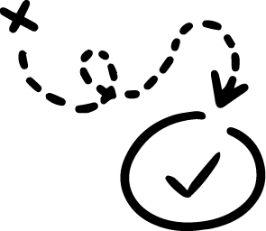

Design Sprint Framework
Facilitating the Design Sprint
Guiding the Team
 This section will guide you through the step-by-step process of executing a conventional design sprint, from defining the challenge on day one to user testing and feedback on day five. Each day is packed with activities and discussions that will drive the sprint forward, foster creativity, and generate tangible outcomes. You will explore research and insights, ideation and sketching techniques, prototype creation strategies, and the critical process of gathering user feedback. By diving into the execution phase, you'll gain the tools and knowledge to bring your ideas to life, iterate rapidly, and create user-centered solutions that have the potential to transform your product. Get ready to embark on a five-day adventure of collaboration, innovation, and problem-solving as you execute a design sprint like a pro.
The Facilitator
A successful Design Sprint facilitator or lead plays a crucial role in guiding the team through the sprint process, ensuring focus, engagement, and productivity towards the sprint goal. They possess a range of key skills: excellent facilitation skills for managing group dynamics, fostering productive discussions, and driving consensus; effective communication skills to convey ideas clearly and manage information flow; adept time management to keep the team on track and meet set timeframes; leadership qualities to guide the team, set a collaborative tone, and foster a positive environment; strong problem-solving abilities to frame problems, facilitate solution generation, and guide decision-making; empathy and understanding of user needs and team perspectives; knowledge of design thinking principles, UX design, and the Design Sprint methodology; adaptability to tailor the process based on team progress, user feedback, and changing factors. A skilled facilitator makes a significant difference in the success of a Design Sprint by enabling effective teamwork, overcoming challenges, and achieving the sprint's goal.
Day 1: Define the Challenge
On the first day of the design sprint you'll be laying the foundation for success. The team comes together to define the challenge they will tackle. Here's a breakdown of some discussions that take place:
- Alignment: The team engages in a collaborative session to map out the problem or opportunity they aim to address. They identify pain points, explore user needs, and align their understanding of the challenge.
- Goal Setting: Clear goals and objectives are established to guide the design sprint. The team collectively defines what they hope to achieve by the end of the sprint, ensuring a shared sense of purpose and direction.
- Stakeholder Interviews: The team conducts interviews with key stakeholders to gain insights into their perspectives, expectations, and goals. These interviews help in understanding the broader context and aligning with stakeholder requirements.
- Lightning Demos: Lightning demos are short presentations where team members share examples of existing products, services, or solutions that relate to the challenge at hand. These demos inspire the team and stimulate fresh ideas.
By the end of Day 1, the team has a clear understanding of the challenge, aligned goals, and initial insights that will inform the rest of the design sprint process.
Day 2: Research and Insights
On Day 2, the focus shifts to gathering user insights and previous research to inform the design process. Here's what happens during this crucial day:
- User Research: The team consolidates the results of research activities, such as interviews, surveys, or observational studies, to gain a deep understanding of the users' needs, behaviors, and pain points. These insights serve as a foundation for empathizing with the target audience.
- Journey Mapping: The team collaboratively maps out the user journey, visualizing each step and touchpoint to identify pain points and opportunities for improvement. This exercise helps the team gain a holistic view of the user experience.
- Affinity Diagramming: Through affinity diagramming, the team analyzes and synthesizes the research findings. They group related insights and observations to identify patterns, common themes, and key user needs.
- Insights and Opportunities: The team identifies critical insights and uncovers opportunities for innovation based on the research findings. These insights shape the ideation process in the subsequent days.
By the end of Day 2, the team has a rich collection of user insights, a deep understanding of their needs, and a solid foundation to drive the ideation and design phases.
Day 3: Ideation and Sketching
Day 3 is all about generating creative ideas and translating them into tangible sketches. The team leverages collaborative techniques to unlock their creativity and explore potential solutions:
- Ideation Sessions: The team engages in brainstorming activities, such as Crazy 8s or SCAMPER, to generate a multitude of ideas. They encourage wild ideas, divergent thinking, and exploration of unconventional solutions.
- Solution Sketching: Each team member individually sketches their ideas on paper, translating their concepts into visual representations. These sketches can include user interfaces, product features, or overall system architectures.
- Silent Critique: The team participates in a silent critique session, where they review and provide feedback on each other's sketches without verbal discussion. This technique encourages unbiased evaluation and creates a safe space for constructive criticism.
- Concept Consolidation: The team collectively selects the most promising ideas and consolidates them into a few refined concepts. They combine elements from different sketches to create robust and innovative solutions.
By the end of Day 3, the team has a collection of diverse, sketched concepts that will serve as the foundation for prototyping and further iteration
Day 4: Prototype Creation
On Day 4, the team focuses on building realistic prototypes quickly and effectively. Here's what takes place during this phase:
- Prototyping Tools and Techniques: The team selects appropriate tools and techniques for prototyping, such as paper prototyping, digital design software, or low-fidelity prototyping tools. They determine the level of fidelity required to test their assumptions.
- Rapid Prototyping: The team works collaboratively to create prototypes that represent the key features and interactions of their selected concepts. The focus is on speed and iteration, rather than perfection.
- Divide and Conquer: Depending on the complexity of the prototypes, team members may divide the work to expedite the process. Each member takes responsibility for specific sections or functionalities of the prototype.
- Usability Testing Preparation: The team prepares for the upcoming user testing sessions by developing a test plan, outlining the tasks and scenarios that users will engage with during the testing phase.
By the end of Day 4, the team has tangible prototypes that simulate the user experience and allow for meaningful user testing in the next phase.
Day 5: User Testing and Feedback
Day 5 is dedicated to conducting user testing sessions and gathering valuable feedback to iterate and refine the design. Here's what happens on this critical day:
- User Testing Sessions: Participants, representative of the target audience, interact with the prototypes while the team observes and takes notes. The team carefully designs scenarios and tasks to uncover insights into usability, functionality, and user satisfaction.
- Feedback and Insights: Based on user testing observations and feedback, the team captures valuable insights and identifies areas for improvement. They analyze the user reactions and preferences to inform the iteration process.
- Iteration and Refinement: The team collectively evaluates the feedback and iterates on the design. They prioritize and implement necessary improvements and adjustments to address usability issues or enhance user experience.
- Final Insights and Next Steps: The team reflects on the overall design sprint process, consolidates the final insights gained throughout the week, and discusses the next steps for implementation, further iteration, or additional user research.
By the end of Day 5, the team has invaluable user feedback, refined prototypes, and a clear understanding of the necessary design iterations to move forward.
By facilitating these structured activities during each day of the design sprint, teams can navigate the process effectively, gather insights, and create prototypes that are grounded in user needs and expectations.
The Design Sprint is a Highly Flexible Framework!
Always remember that one of the key strengths of the design sprint is its adaptability, allowing teams to adjust the duration and core activities based on their specific needs and constraints. Whether working with a tight deadline, limited resources, or complex user requirements, the design sprint can be customized to accommodate different scenarios. The conventional 5-day duration of the sprint is not a steadfast rule; it can be condensed or extended based on the project's urgency or complexity. Similarly, the core activities within each sprint day can be modified or supplemented to address the unique challenges and goals of the project. This flexibility ensures that the design sprint remains a versatile and effective framework, capable of driving innovation and delivering user-centric solutions across a wide range of customer and product design scenarios.